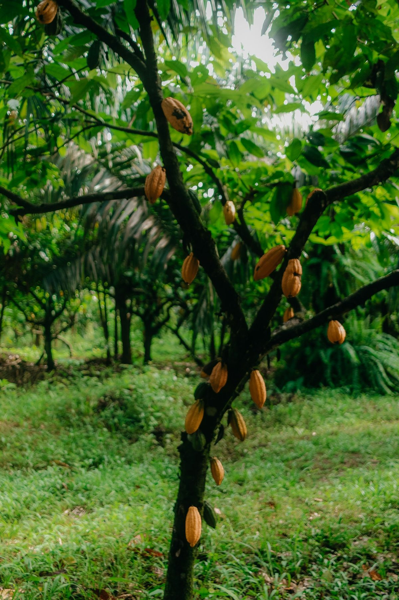
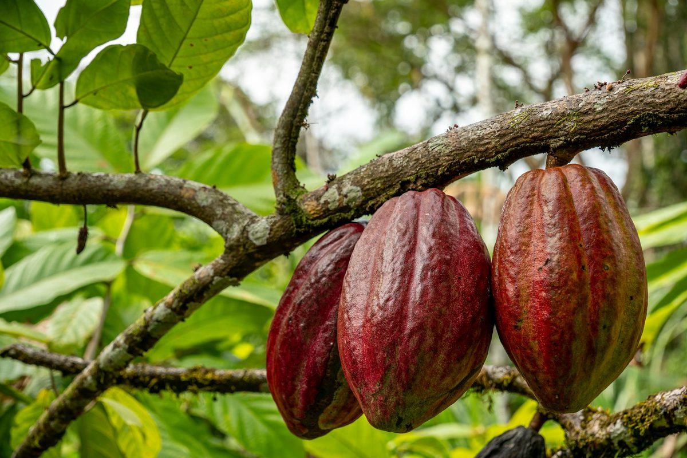
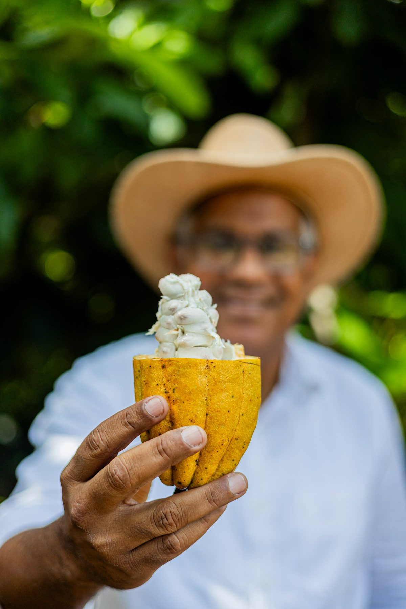
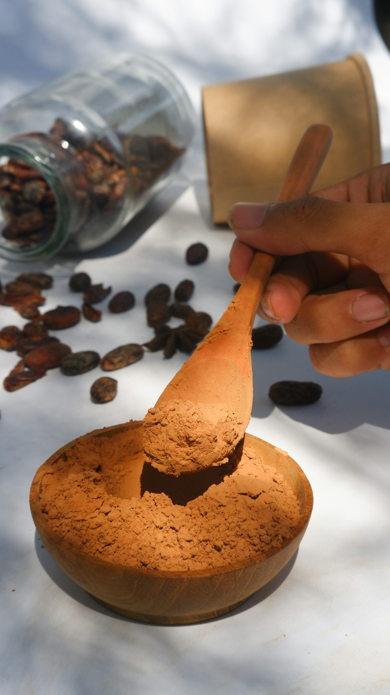
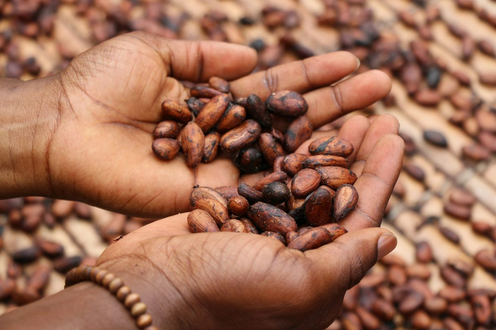

Câu chuyện phía sau mỗi hạt cacao.
Từ đất đỏ, một cảm hứng được khơi nguồn.
Có những vùng đất không chỉ nuôi dưỡng cây trái, mà còn để lại nét riêng trong từng nguyên liệu. Với Bazan Cacao, cảm hứng bắt đầu từ đất đỏ bazan, nơi của những mùa nắng gió và tiềm năng của nông sản Việt.
Chúng tôi nhìn thấy ở cacao một giá trị đáng được khám phá và kể lại bằng góc nhìn mới. Bazan Cacao ra đời từ cảm hứng ấy.

Trân trọng nguyên bản, khơi mở những sắc thái.
Một trái cacao chứa đựng nhiều hơn ta thường nghĩ: từ hạt đậm vị đến lớp vỏ lụa thơm dịu, mỗi phần đều có tiềm năng riêng.
Thay vì giới hạn cacao trong một cách thưởng thức quen thuộc, Bazan Cacao phát triển bột cacao nguyên chất, socola 85% cacao và trà vỏ lụa cacao. Mỗi sản phẩm một cá tính, cùng giữ lại nét đặc trưng của cacao.

Để cacao Việt được cảm nhận theo nhiều cách hơn.
Giá trị của cacao không chỉ nằm trong thành phẩm, mà còn ở những điều mọi người khám phá khi thưởng thức: một tách cacao nguyên chất, một miếng socola đậm vị hay một buổi workshop tự tay làm sản phẩm của riêng mình.
Bazan Cacao mong cacao trở thành một phần quen thuộc của mỗi ngày, và lan tỏa sự trân trọng dành cho những giá trị từ thiên nhiên Việt Nam.

Một quả cacao, nhiều hơn một sản phẩm.
Hạt cacao
Nguồn hạt từ vùng đất đỏ bazan.
Lên men và phơi
Hạt được ủ, phơi dưới nắng gió để giữ vị chua thanh.
Rang và tách vỏ
Hạt thành bột cacao và socola, lớp vỏ lụa được giữ lại.
Vỏ lụa thành trà
Phần thường bị bỏ đi trở thành trà vỏ lụa cacao.
Đánh thức giá trị của từng quả cacao Việt: hạt trở thành những sản phẩm nguyên chất, ít đường, vỏ lụa trở thành tách trà thơm, để cacao không chỉ là một món ăn mà trở thành niềm tự hào được mang đi xa.
Đến năm 2030, trở thành thương hiệu cacao xanh hàng đầu Việt Nam, đưa cacao từ đất đỏ bazan đến thị trường châu Á, châu Âu và Bắc Mỹ, đồng thời góp phần gìn giữ những cánh rừng đã nuôi dưỡng nên vị cacao ấy.
Nguyên bản
Giữ vị tự nhiên, không pha trộn.
Bền vững
Tận dụng phụ phẩm, hạn chế lãng phí.
An lành
Ít đường, thành phần rõ ràng.
Nâng tầm nông sản
Tạo giá trị cao hơn cho nông sản Việt.
Vị ngon chỉ là khởi đầu.
- Nguyên chất: cacao thật, không pha tạp hay dùng nguyên liệu thay thế.
- Ít đường: hạn chế đường tối đa để giữ vị cacao tự nhiên.
- Rõ ràng: thành phần, nguồn gốc và cách dùng được ghi đầy đủ trên bao bì.
- Đạt chuẩn: sản phẩm đầy đủ hồ sơ công bố, được sản xuất tại cơ sở đạt chứng nhận an toàn thực phẩm.

Những người đứng sau Bazan Cacao.
Bazan Cacao được xây dựng bởi những người trẻ yêu cacao và tin vào tiềm năng của nông sản Việt. Chúng tôi cùng nhau chọn nguồn nguyên liệu, phát triển sản phẩm và tổ chức những buổi workshop về cacao.
- Đỗ Thị Ngọc HàCEO
- Nguyễn Vũ Ngọc LinhCFO
- Phạm Thị Mỹ LinhCMO
- Trần Thị LoanCBDO
- Hoàng Như QuỳnhCOO